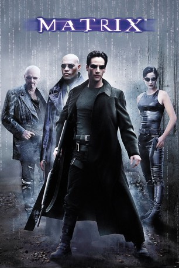

#6873 Matrix 1
Alternativ: The Matrix (Englischer Titel)
Auszeichnungen: 4 Oscars gewonnen 2 BAFTA-Awards gewonnen
 
 IMDB-Wertung: 8.7 / 10
IMDB-Wertung: 8.7 / 10  IMDB-TOP-Platzierung: 18
IMDB-TOP-Platzierung: 18  Metascore: 73
Metascore: 73 
Der Hacker Neo wird übers Internet von einer geheimnisvollen Untergrund-Organisation kontaktiert. Der Kopf der Gruppe – der gesuchte Terrorist Morpheus – weiht ihn in ein entsetzliches Geheimnis ein: Die Realität, wie wir sie erleben, ist nur eine Scheinwelt. In Wahrheit werden die Menschen längst von einer unheimlichen virtuellen Macht beherrscht – der „Matrix“, deren Agenten Neo bereits im Visier haben ...
Jahr: 1999
Dauer: 136 Minuten
FSK: 16
Land: USA Studio: Warner Bros.Tonspuren: DD5.1 - ,
Untertitel: Deutsch, Englisch,
Auflösung: 1080p (1920x800) Größe: 13516 MB
Genre: Action, Sci-Fi
Regisseur: Lana Wachowski, Lilly Wachowski
Drehbuch: Lilly Wachowski, Lana Wachowski
Soundtrack: Don Davis
Darsteller:
 Keanu Reeves als Neo
Keanu Reeves als Neo Laurence Fishburne als Morpheus
Laurence Fishburne als Morpheus Carrie-Anne Moss als Trinity
Carrie-Anne Moss als Trinity Hugo Weaving als Agent Smith
Hugo Weaving als Agent Smith- Gloria Foster als Oracle
 Joe Pantoliano als Cypher
Joe Pantoliano als Cypher- Marcus Chong als Tank
- Julian Arahanga als Apoc
- Matt Doran als Mouse
- Belinda McClory als Switch
- Anthony Ray Parker als Dozer
- Paul Goddard als Agent Brown
- Robert Taylor als Agent Jones
- David Aston als Rhineheart
- Ada Nicodemou als Dujour (White Rabbit Girl)
 Bill Young als Lieutenant
Bill Young als Lieutenant- Robert Simper als Cop
- Nigel Harbach als Parking Cop
- Mike Duncan als Twin (uncredited)
 Nash Edgerton als Resistance Member (uncredited)
Nash Edgerton als Resistance Member (uncredited)- Steve Rutherford als Police Officer (uncredited)
- Marc Aden Gray als Choi
- Deni Gordon als Priestess
- Rowan Witt als Spoon Boy
- Eleanor Witt als Potential
- Tamara Brown als Potential
- Janaya Pender als Potential
- Adryn White als Potential
- Natalie Tjen als Potential
- David O'Connor als FedEx Man
- Jeremy Ball als Businessman
- Fiona Johnson als Woman in Red
- Harry Lawrence als Old Man
- Steve Dodd als Blind Man
- Luke Quinton als Security Guard
- Lawrence Woodward als Guard
- Michael Butcher als Cop Who Captures Neo
- Bernard Ledger als Big Cop
- Chris Pattinson als Cop
- Rana Morrison als Shaylae - Woman in Office (uncredited)
Datei: X:\4-Tetralogie(M-Z)\Matrix\Matrix 1 (1999, FSK16, 1920x800).mkv seit 06.09.2017
Festplatte: HD Collection-3(N-Z)-6(A-Z)
 Es gibt insgesamt 7 Filme in der Gruppe '4-Tetralogie(M-Z)\Matrix'
Es gibt insgesamt 7 Filme in der Gruppe '4-Tetralogie(M-Z)\Matrix'